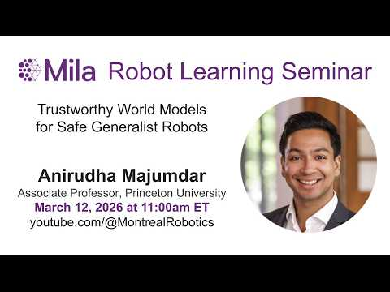

Research
We are working toward generalist robots that contribute usefully and deeply to society. To get there, we pursue foundational research on robots that are helpful, safe, and trustworthy while generalizing to novel tasks and human-centered environments.

Trustworthy World Models for Safe Generalist Robots
Presentation at MILA (Spring 2026).
Watch on YouTube →Research bets
We are betting that the technical path to truly helpful robots runs through world models.
Predictive models of the world are fundamental to robotics. Yet despite decades of investment in physics-based simulation, we still have no models that can endow robots with general manipulation skills. Our bet is that action-conditioned video generation models can serve as general-purpose world models for robotics:
Photorealistic predictions
They enable fine-grained simulation by rendering what the world will look like after an action.
Physical interaction
They simulate the hard, contact-rich dynamics that hand-built simulators struggle to capture.
Improve with data
Unlike fixed physics engines, they scale with data and compute.
We are pursuing fundamental breakthroughs that turn these capabilities into robots that plan, evaluate and improve themselves, and stay safe while collaborating with humans. Our research roadmap has three thrusts — click any thrust to read concrete questions we are working on.
Autonomous play data collection for world models.
Q1How do we collect the right data, at scale, to train high-fidelity world models?
Internet video is abundant but action-free; robot data is action-rich but scarce. The open problem is which data actually teaches physics (e.g., autonomous play, human egocentric videos) and how to gather it at scale.
Q2How do we go beyond pixel prediction and learn task-relevant latent representations?
Predicting every pixel wastes capacity on things a robot never needs to predict. We want models that predict what matters for the task and ignore irrelevant nuisances.
Q3What are the right architectures for omni-modal robotics models — language, vision, action, audio, touch?
Robot models of the future will be omni-modal and flexibly conditioned. What are the right architectural components (e.g., diffusion, transformers) for such models, and how do we fuse them?
Rapid adaptation to new embodiments.
Q4How can we adapt pre-trained video models for accurate physical simulation?
A video model renders plausible-looking motion, but we want world models that serve as high-fidelity simulators. The challenge is producing predictions accurate enough for the rich interactions in manipulation.
Q5How do we keep a video model's pretrained knowledge when fine-tuning it into a world model?
A video model already understands objects, gravity, and occlusion. The goal is to specialize these models for robotics while retaining as much of the core pre-trained understanding as possible.
Q6Can we generalize a world model to a new embodiment with under 30 minutes of play data?
Every new robot usually means a new dataset. We're targeting minutes, not weeks of fine-tuning for a new robotic embodiment.
A video model rollout in a safety-sensitive scenario.
Q7How do we rigorously quantify a world model's uncertainty for robust RL, planning, and evaluation?
A model that's confidently wrong is dangerous. Calibrated uncertainty tells a planner when to trust the dream and when to fall back on reality.
Q8How do we combine a little real-world data with world models to red-team and improve policies?
Real failures are rare and expensive to find. A world model can (1) manufacture the edge cases a policy would otherwise only meet in deployment, and (2) iteratively improve the policy on these scenarios.
Q9How do we train world models that predict rewards for assessing task progress and safety?
A world model that also predicts reward can judge its own rollouts — scoring whether a task is progressing and whether an action is safe. Both are hard: reward for contact-rich manipulation resists hand-design, and safety judgments need the very failures we hope never happen.
Research themes & philosophy
Fundamental research
In an age where heuristics dominate robotics and AI, we believe foundational research is what enables long-term progress. We draw on a broad theoretical and algorithmic toolkit, and tackle core technical challenges across application domains.
Hardware loop
A tight feedback loop between theory and hardware keeps us honest: it exposes hidden assumptions, motivates new questions, convinces others of our ideas, and often points the way to novel solutions. We are supported by two dedicated lab spaces, shared experimental facilities, and a number of hardware testbeds.
Collaborations
We actively collaborate with industry partners including Google DeepMind, the Toyota Research Institute, NVIDIA, Waymo, and Physical Intelligence — letting us develop and test ideas at a scale rarely feasible in academia alone, with industry-scale compute, robot hardware, large datasets, and domain expertise.